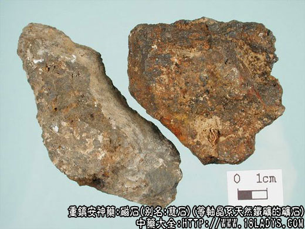

本品为少用中药。始载《神农本草经》列为中品，原名慈石。
别名：活磁石、灵磁石、吸铁石。
来源：为等轴晶系天然铁矿的矿石。
产地：主产于河北、山西、辽宁、山东、四川、湖北等省。
性状鉴别：矿石呈不规则块状，多具棱角，大小不一。表面铁黑色或棕褐色，不透明。有金属样光泽或无光泽。体重、质坚实致密。断面不平坦，显颗粒状，颜色与表面相同。有土腥味，无味，有吸铁能力，铁粉附着其上，则成毛状直立，习称活磁石；存放日久失去磁性者习称死磁石（呆磁石）。
以铁黑色，有光泽，吸铁能力强者为佳。
主要成分：为四氧化三铁。
药理作用：安神、镇静、止血。
炮制：煅红后，醋淬，碾成粗末。
性味：辛、咸、微寒。
归经：入肝、肾经。
功能：补肾潜阳，纳气，镇惊。
主治：眩晕目暗、耳鸣、耳聋、肾虚气喘、惊悸失眠。
临床应用：
（1）治疗肝肾阴虚、阴阳上亢而致的眩晕、头重、面赤、心悸（如高血压病），常配牛膝、杜仲、龙齿、石决明等，主要取其有镇静作用。
（2）治疗肾虚所致的听力减退、视力减退、喘息。
老年听力减退伴有耳鸣、见证肾虚者、可能与脑神经变性有关、用磁石配补益药如熟地、山萸肉等。磁石在这方面的作用原理尚未明了。
视力模糊而见证肾虚者（如早起老年性白内障、视神经病变），则以磁石配朱砂、神曲等，方如磁朱丸，据观察，有一定治疗效果，可预防白内障进一步恶化和视力进一步减退。一部分老年性白内障病例服磁朱丸后视力有所改善，但晶体浑浊度无湿著减退。不过磁朱丸内的三药中，究竟哪一种药起主要作用，尚有待进一步研究。
对肾虚气喘（如肺气肿、志气管哮喘），磁石有摄钠和降气作用（可能主要为镇静），可辅助熟地、肉桂等药使用。
附：在矿物药中，磁石药性较纯和，毒性和副作用较小，在常量下连服十剂八剂一般也无大碍。
用量：9～30g。入汤剂最好先煎。
处方举例：磁朱丸（《千金方》）：磁石60g、朱砂30g、神曲120g，制丸，每日12g，分3次服，治老年性白内障，疗程需半年以上才有效。
注：磁石存放日久，发生氧化，磁性便会减退，如已失去磁性，与活磁石放在一起，磁性可逐渐恢复。